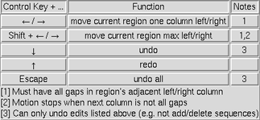

|
|
Multalign Viewer shows amino acid and nucleotide sequences:
See also: Blast Protein, the Sequences and Structures tutorial, the Alignments tutorial, and the following reference:
Tools for integrated sequence-structure analysis with UCSF Chimera. Meng EC, Pettersen EF, Couch GS, Huang CC, Ferrin TE. BMC Bioinformatics. 2006 Jul 12;7:339.
There are several ways to start Multalign Viewer, a tool in the Sequence category. Explicitly starting Multalign Viewer brings up a dialog for opening a sequence alignment. In fact, simply opening a file in any of the registered sequence alignment formats (without starting Multalign Viewer first) will automatically use it to show the alignment. Several alignments can be open at the same time, each in a separate sequence window.
Individual sequences of structures in Chimera can be shown:
 |
The figure shows part of the sequence window contents for the input file apoex.fa. In addition to sequences and their names, numbering and header lines may be displayed. Font size, sequence wrapping behavior, and the coloring of residue one-letter codes can be controlled in the Appearance preferences. Boxes enclosing one or more residues are called alignment regions. One can search for occurrences of a particular string or pattern of residues in one or all of the sequences using Edit... Find Subsequence or Edit... Find PROSITE Pattern in the Multalign Viewer menu.
When the mouse focus is in the sequence window, the Page Down key (or space) moves the view down to start with the block below the topmost block whose beginning is currently visible; Page Up (or Shift-space) moves the view up to start with the block above the topmost block whose beginning is currently visible. Vertical alignment scrolling can also be done with the mouse wheel.
The Hide button closes the sequence window without changing the state of Multalign Viewer. The sequence window can be reinvoked using the Raise option for the Multalign Viewer instance in the Tools menu (abbreviated MAV). This is also useful when the window has become obscured by other windows. Help opens this manual page in a browser window, and Quit exits from Multalign Viewer.
Numbering can be displayed over the alignment and to the left and/or right of the sequences. Numbering displays can be controlled with the Numberings menu.
Alignment numbering (for the alignment as a whole) includes gap positions and always starts at 1. Whether it should be shown initially can be set in the the Headers preferences. When present, alignment numbering is shown above any headers.
Sequence numbering (for individual sequences) includes only non-gap positions and can start with numbers other than 1. Sequence start numbers are set to 1 when an alignment is opened, except:
Headers are lines of information shown above an alignment in the sequence window. They can be hidden/shown with the checkboxes in the Multalign Viewer Headers menu. How headers are calculated and which are shown initially (for alignments, not single sequences) can be controlled in the Headers preferences. Note that header usefulness will depend on what sequences are included in an alignment and whether they are aligned correctly.
The contents of a header can be character, a single character per column, or numeric, displayed as a histogram. If the values in a numeric header fall within the range of 0 to 1, they will be used directly as histogram bar heights. If the range extends below 0 or above 1, the values will be converted into histogram bar heights ranging from 0 to 1 according to:
for values ≥ 0, 1 – ½(e– value)
for values < 0, ½(evalue)However, the original values (not those used for histogram display) are assigned as residue attributes and written out when header contents are saved.
Headers may be dynamic, with values that update automatically when independent variables such as the sequence alignment or structure associations are changed, or static, with values that stay the same.
The following dynamic headers are available by default:
Alignment regions can be defined manually or by any of several operations within Multalign Viewer. A region is shown using a colored rectangle or outline in the sequence window; a single region can contain any number of disjoint and/or abutting rectangular blocks. Regions should be created as desired after any sequence reordering, as that operation will delete all existing regions.
A region can be created manually by dragging with the left mouse button within the sequence window. Dragging downward into the following block highlights to the end of the preceding block. The initial region colors can be controlled in the Regions preferences. Shift-dragging with the left mouse button adds to the active region. Ctrl-dragging creates a new region and makes it the active region.
The active region is the region most recently created manually, clicked on in the sequence window, or designated as Active in the Region Browser. The corresponding parts of any associated structures are highlighted in the main Chimera window by becoming selected. Only one region can be active at a time. In the sequence window, the active region is indicated with a dashed outline; clicking the active region deactivates it, and clicking a different region deactivates the former active region and makes the new region active. A region with no interior color is only responsive to clicks on its borders. Where regions overlap, only the highest is responsive to clicks.
 |
The Region Browser (Tools... Region Browser in the Multalign Viewer menu) can be used to manage the existing regions. Checkboxes reflect and control which region is Active (if any) and which are Shown in the sequence window. Clicking an entry in the Region Browser highlights the line and chooses the region. More than one region can be chosen at a time. The chosen region(s) are not necessarily active.
The Border color and Interior color of the chosen region(s) can be changed using the adjacent color wells. One can specify whether the chosen region(s) can Include gaps; when this setting is false, only residues and not gap positions will be enclosed. Although a given region may then appear as disjoint blocks, it will still be a single region.
The Delete button on the Region Browser deletes the chosen region(s). The region named Chimera selection cannot be deleted, but it can include zero residues. Since regions may overlap, a region can be considered higher or lower than another. Raise puts the chosen region(s) in front of any other regions in the sequence window and moves the corresponding entries in the Region Browser to the top. Lower puts the chosen region(s) behind any overlapping regions in the sequence window and moves the corresponding entries in the Region Browser to to the bottom. Copy copies the chosen region(s) and requests a new name for each copy, while Rename requests a new name for each chosen region.
Close dismisses the Region Browser and Help opens this manual page in a browser window.
Alternatively, when the cursor focus is in the sequence window, the up arrow and down arrow keys can be used to raise and lower the active region, respectively; pressing the Delete key will delete the active region.
Besides manual creation, there are several ways to generate regions or change their contents:
A Newick-format tree corresponding to the alignment can be read and displayed to the left of the sequences with Tree... Load in the Multalign Viewer menu. A newly loaded tree will replace any previously shown tree. The tree can be hidden/shown with Tree... Show Tree.
The sequence names in the tree must be the same as those in the alignment, and neither set of names can be a subset of the other. If the order of sequences in the tree differs from that in the alignment, a dialog will appear, requesting permission to reorder the alignment sequences for clearer display (to avoid tree branch crossings). Reordering will delete all region information, although a region reflecting the current Chimera selection (if any) will subsequently (re)appear.
When the tree includes branch lengths, both solid and dotted lines are used for display, with horizontal solid line lengths proportional to branch lengths. When the tree does not include branch lengths, only solid lines are used.
Clicking a node in the tree makes it red and chooses it for subsequent operations. Tree... Extract Subalignment copies the sequences defined by the chosen node into a separate sequence window. The alignment of the sequences is kept exactly the same as in the full alignment, including any all-gap columns, so that the subalignment is initially the same length as the full alignment. If desired, all-gap columns can be deleted with the Edit menu.
Alignment editing allows rearranging residues and gaps without changing the component sequences. Residues cannot be created, deleted, mutated, or reordered within a sequence, but gap positions can be created and deleted.
|  |
Edit... Show Editing Keys in the Multalign Viewer menu brings up a dialog summarizing Ctrl-key editing functions. The active region can be moved one column at a time with Ctrl-left arrow and Ctrl-right arrow, or as far as possible in one step with Shift-Ctrl-arrow (until the active region abuts either some other residues or the end of the alignment). If the active region already abuts the alignment start or end, new columns will be created as needed to accommodate the movement. Such movements can be undone step-by-step with Ctrl-down arrow or collectively with Ctrl-Esc. Only Ctrl-key editing can be undone, not the larger-scale operations described below (sequence addition, deletion, and reordering). Such larger-scale operations clear the editing history, but otherwise all Ctrl-key editing operations are retained. A previously undone movement can be redone with Ctrl-up arrow. Undo/redo repositions residues but not the active region box, since the active region could have been changed during editing.
Sequences can be added, reordered, and deleted and gap columns added and deleted using the Multalign Viewer Edit menu. Sequence reordering will delete all region information, although a region reflecting the current Chimera selection (if any) will subsequently (re)appear.
The Edit menu also allows copying a sequence as plain text so it can be pasted into some other application window.
Choosing File... Save As from the Multalign Viewer menu brings up a dialog for saving the sequence alignment to a file. It is possible to save just the active region to a file; the region may consist of disjoint sections, but each sequence (row) included must contain the same set of columns. All-gap columns (for example, arising when a region to be saved includes only a subset of the sequences) can be omitted from the output, and numbering can be appended to the sequence names. The sequence alignment formats available for saving are the same as those that can be read. An alignment saved in Stockholm format will automatically include annotations describing the secondary structure of any associated structures.
The sequence window contents can also be saved as an EPS file (File... Save EPS in the Multalign Viewer menu).
The percent identity between any pair of sequences in the alignment can be calculated. Tools... Percent Identity in the Multalign Viewer menu opens a dialog for specifying the sequences (by name from the pulldown menus labeled Compare and with) and what to divide by:
Apply calculates the percent identity without dismissing the dialog, while OK calculates the percent identity and dismisses the dialog. The percent identity is reported in the status area near the bottom of the sequence window and the Chimera Reply Log. Close simply dismisses the dialog, and Help opens this manual page in a browser window.
Annotations and comments associated with an alignment as a whole (as opposed to individual columns or sequences) can be viewed and edited using Edit... Alignment Annotations in the Multalign Viewer menu. Changes are not assessed for correctness.
Alignment annotations are shown in the upper part of the dialog. Each has two parts, a name and a value (generally text). For example, MSF length is a possible name and 366 is a possible associated value. A new annotation can be added by clicking New, specifying a name, and then entering a value in the adjacent field. Values can have multiple lines even though only one is shown; pressing return in a value field starts a new line, but the previous information is retained. Clicking Delete and then choosing an annotation name removes the corresponding annotation.
Alignment comments, shown in the lower part of the dialog, may consist of multiple lines of free-form text.
Not all sequence alignment formats can accommodate annotations. Thus, saved files may not include this information or reflect any changes that have been made. Only the Stockholm format accommodates arbitrary annotations, whereas both Stockholm and RSF formats allow for comments.
Markups in Stockholm format are handled as follows:
The GR markup line for a sequence and its associated structure starts with
#=GR seq-name Chimera_actual_SS_struct-nameThe structure name is included because there can be more than one structure associated with a given sequence. Chimera-generated GR secondary structure markups may include the symbols:
| symbol | meaning |
|---|---|
| . | gap in sequence |
| H | helix |
| E | strand |
| C | other structure |
| X | sequence residue not associated with structure residue |
If a sequence did not have a GR SS markup in the original input file and is associated with only one structure, another markup line with the same contents but named SS instead of Chimera_actual_SS_struct-name will also be included.
A sequence in the alignment will be associated automatically with a structure chain if their sequences can be aligned without too many mismatches. The allowable number of mismatches is user-specified as a proportion of the total number of residues in the structure chain (1/10 by default; see the Structure preferences). For automatic association, gaps in the structure sequence relative to the sequence in the alignment file can only occur where residues are missing from the structure (for example, a flexible loop with insufficient density for coordinates to be determined). The order in which the sequence and structure files are opened does not matter. Associations are reported in the status area near the bottom of the sequence window and the Chimera Reply Log. A structure (even if it has multiple chains) cannot be associated with more than one sequence, but a single sequence can be associated with more than one structure. If more than one sequence matches a given structure chain, the single best-matching sequence is associated.
Associations can be changed or added if the automated procedure does not give the desired result.
The names of structure-associated sequences are shown in bold over a box indicating the model-level color of the structure. For example, APE_HUMAN in the sequence window figure is associated with a structure whose model-level color is white. If multiple models are associated with the same sequence, the box is shown as a dark green dashed outline. When the cursor is placed over the name of a sequence, information on the sequence and any associated structure(s) is shown in the status area near the bottom of the sequence window. When the cursor is placed over a sequence residue that is associated with a residue in one or more structures, information on the structure residue(s) is given. Association information can be saved to a file.
Sequence-structure association may create new regions. If all residues of a sequence are matched, no region is created. Otherwise, regions are created containing the matched segment(s), any mismatches, and any gaps in the structure relative to the sequence. The region names report the associated structure chain and the number of gaps or mismatches. The initial colors and display status (shown or hidden) of these regions can be controlled in the Regions preferences.
Association enables several types of sequence-structure crosstalk:
Changing Associations
Associations can be changed or added using the Structure/Sequence Associations panel (Structure... Associations in the Multalign Viewer menu). The panel lists the molecule models open in Chimera. An association is specified by choosing a chain (if the model has more than one chain) and the name of the sequence to associate with that chain. The choices for association include the sequences in the alignment displayed by Multalign Viewer and none. When the setting is none, there is an option to associate with best match, i.e. to compare the structure chain with all of the sequences in the alignment and associate it with the one that yields the fewest mismatches.Associations will be made as specified, no matter how inappropriate. Apply performs the associations without dismissing the panel, while OK performs the associations and dismisses the panel. Close dismisses the panel without changing the associations. Help opens this manual page in a browser window.
Automatic Structure Loading
Structure... Load Structures in the Multalign Viewer menu can be used to open structure files corresponding to sequences that are not already structure-associated. The corresponding structure files are determined from the sequence names using the rules given in the Structure preferences, then retrieved and opened (as described for Fetch by ID). If Automatically load Structures is turned on (also in the Structure preferences), this will occur as soon as an alignment is read.
In sequences associated with structures, regions named structure helices (pale yellow with gold outline) and structure strands (pale green with darker outline) can be shown/hidden with the Multalign Viewer menu setting Structure... Secondary Structure... show actual. This setting is initially turned on for individual sequences displayed with the Sequence tool.
Protein helix and strand assignments are taken from the input structure file or generated with ksdssp. Helix and strand regions can overlap when more than one structure is associated with a sequence. (Regardless of whether the regions exist, however, an alignment saved in Stockholm format will automatically include annotations describing the secondary structure of any associated structures.)
In sequences not associated with structures, regions named predicted helices (gold outline) and predicted strands (green outline) can be shown/hidden with the Multalign Viewer menu setting Structure... Secondary Structure... show predicted. The prediction is done with GOR.
Structure residues associated with residues in a sequence alignment shown by Multalign Viewer are assigned attributes:
Structure... Select (or Render) by Conservation in the Multalign Viewer menu opens the corresponding portion of Render/Select by Attribute, set to the residue attribute mavConservation if numerical, otherwise mavPercentConserved.
Numerical attributes will appear in the attribute lists of Render/Select by Attribute; character attributes will be listed only Select by Attribute portion. It may be necessary to Refresh the attribute menus or values in these tools to update them with any changes in Multalign Viewer header information.
Structure... Match in the Multalign Viewer menu allows structures to be superimposed based on the alignment of their associated sequences. The dialog contains two subpanels, each listing the structures associated with sequences in the alignment. One reference structure should be chosen in the left side, but any number of structures to be matched (superimposed) with it can be chosen in the right side. Residues in each Structure to match are paired with the aligned (in the sequence alignment) residues of the Reference structure. If both structures are associated with the same sequence, the correspondence is even more obvious. Fitting uses one point per residue: CA in amino acid residues and C4' in nucleic acid residues. If a nucleic acid residue lacks a C4' atom (some lower-resolution structures are P traces), its P atom will be paired with the P atom of the aligned residue. The number of atom pairs fitted and the resulting RMSD are reported in the Chimera Reply Log and the status area near the bottom of the sequence window.
Match highly conserved residues only causes only the well-conserved (at least 80%) positions in the alignment to be used for the least-squares fit. These are the positions shown as capital letters in the consensus sequence.
Match active region only causes only the positions in the current active region of the alignment to be used for matching.
Use pseudobonds to show matched atoms indicates that lines (pseudobonds) should be drawn between the matched atoms. For each matched pair of structures, a pseudobond group is created and colored uniquely (in order, the named colors dark green, dodger blue, sienna, yellow, spring green, purple, gray, and coral are used). Each group is named matches of..., where the rest of the name indicates the structures and chains that were matched. The PseudoBond Panel can be used to change the appearance of or delete the pseudobonds.
Iterate by pruning long atom pairs until no pair exceeds [x] angstroms refers to an iterative fitting procedure: in each cycle, atom pairs are removed from the match list and the remaining pairs are fitted, until no matched pair is more than x angstroms apart (x=2.0 by default). The atom pairs removed are either the 10% farthest apart of all pairs or the 50% farthest apart of all pairs exceeding the cutoff, whichever is the lesser number of pairs. The result is that the best-matching "core" regions are maximally superimposed; conformationally dissimilar regions such as flexible loops are not included in the final fit, even though they may be aligned in the sequence alignment.
Create region showing matched residues indicates that the residues paired to generate the final fit should be shown as a region named matched residues.
Apply performs the matching (superposition) without dismissing the dialog. OK performs the matching and dismisses the dialog, Cancel dismisses the dialog without performing a match, and Help opens this manual page in a browser window.
The spatial variation among multiple superimposed structures can be shown and analyzed using the RMSD header and corresponding residue attribute, mavRMSD. All of the structure residues associated with a column in the alignment are assigned the same mavRMSD value.
Pairwise assessments of spatial variation can be performed by choosing Structure... Assess Match from the Multalign Viewer menu. Each pairwise comparison creates an attribute of the residues of one structure containing the distances from the sequence-aligned residues of a reference structure.
A Reference structure should be chosen from the pulldown menu of structures associated with sequences in the alignment. One or more Structures to evaluate should be chosen from the list of remaining structures. The structures should already be superimposed, but the superposition can have been generated in any way, including manually (not necessarily using Structure... Match).
One point per residue is used for the comparison. The distance between each reference-evaluation pair of residues aligned in the sequence alignment (or corresponding to the same residue, if the reference and evaluation structures are associated with the same sequence) is measured. The distances are assigned as a residue attribute of the evaluation structure(s), named matchDist by default. After attribute values have been assigned, Select by Attribute will appear, set to the new residue attribute.
OK performs the comparison and dismisses the dialog, while Close just dismisses the dialog. Help opens this manual page in a browser window.
The Preferences section of the Multalign Viewer menu controls preferences specific to Multalign Viewer. Settings are saved to the Chimera preferences file as soon as they are changed.
Multalign Viewer preferences are grouped together in sections shown as index cards:
Note that a typed-in value will not be applied until Apply, OK (which also dismisses the preferences tool), or the Enter (return) key has been pressed. Changes in other types of settings take effect and are saved immediately.
The Appearance section of the Multalign Viewer preferences controls sequence text arrangement and coloring. Most of the preferences in this section can be set separately for Multiple alignments and Single sequences.
The Headers section of the Multalign Viewer preferences controls how sequence alignment headers are calculated and which are shown initially (for alignments, not single sequences).
AL2CO refers to the program described in:AL2CO: calculation of positional conservation in a protein sequence alignment. Pei J, Grishin NV. Bioinformatics. 2001 Aug;17(8):700-12.Several AL2CO parameters can be adjusted:The AL2CO paper should be consulted for further details and cited if the results are used in a publication. The conservation values from AL2CO are in standard deviations from the mean (sometimes called Z-scores) and can range from –∞ (least conserved) to +∞ (most conserved).
- Frequency estimation method (unweighted/modified Henikoff & Henikoff/independent counts) - whether/how to weight the sequences
- Conservation measure (entropy-based/variance-based/sum of pairs) - which of the formulas available in AL2CO to use for conservation
- Averaging window (1 by default) - window width, or how many alignment positions to average in a sliding window. The result is assigned to the central column of the window when the width is odd, the column left of center when the width is even (e.g., the fourth position in a window of 8), with various adjustments at the termini. The authors of AL2CO recommend a width of 3 for motif analyses.
- Gap fraction (0.5 by default) - no value is calculated for columns in which gap fraction or more of the sequences have gaps
- Sum-of-pairs matrix [choices: BLOSUM-30, BLOSUM-35, BLOSUM-40, BLOSUM-45, BLOSUM-50, BLOSUM-55, BLOSUM-60, BLOSUM-62 (default), BLOSUM-65, BLOSUM-70, BLOSUM-75, BLOSUM-80, BLOSUM-85, BLOSUM-90, BLOSUM-100, BLOSUM-N, identity, PAM-40, PAM-120, PAM-150, PAM-250] - which amino acid similarity matrix to use with the AL2CO sum of pairs Conservation measure
- Matrix transformation (none/normalization/adjustment) - whether/how to modify the matrix used with the AL2CO sum of pairs Conservation measure
normalization: S'ab = Sab / (SaaSbb)½adjustment: S''ab = 2Sab – ½(Saa + Sbb)
In a Clustal histogram, full bar height indicates complete identity, 2/3 bar height indicates Clustal strong group conservation, and 1/3 bar height indicates Clustal weak group conservation.
Clustal characters are the characters used in Clustal format to indicate conservation: "*" for complete identity, ":" for strong group conservation, and "." for weak group conservation.
An identity histogram shows what proportion of the sequences have the most prevalent nongap character per alignment column. Histogram bar heights are proportional to (M-1)/(N-1), where M is the number of occurrences of the most prevalent residue type at a position in the alignment and N is the number of sequences in the alignment. Thus, if every sequence has a different residue at a given position, the bar height is zero, not 1/N. However, M/N values (not the values used for display purposes) are used for the mavConservation attribute and written out when conservation values are saved.
total score = 0.70(residue similarity score) + 0.30(secondary structure score) – gap penaltiesThe values in the secondary structure Scoring matrix (for all pairwise combinations of H helix, S strand, and O other) and the secondary-structure-specific Gap opening penalties can be adjusted. The secondary structure score is computed in the same way as described for the residue similarity score, except that sequences without associated structures contribute neither to the score nor to the sequence count used for normalization. When secondary structure scoring is used (even if the slider is set to zero),
The alignment parameter values last used for adding a sequence are retained. However, Reset... buttons are provided for restoring the general alignment parameters (those other than secondary structure scoring) and secondary structure scoring parameters to their factory defaults.